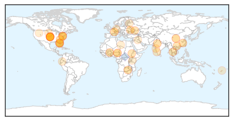
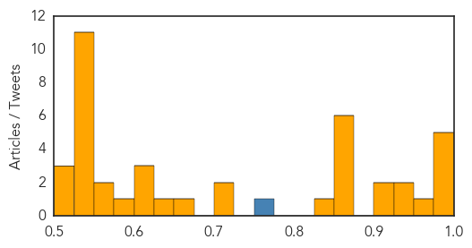
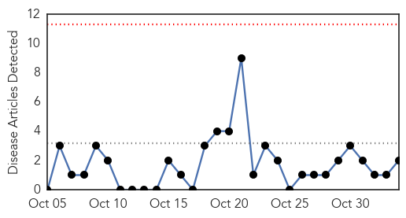
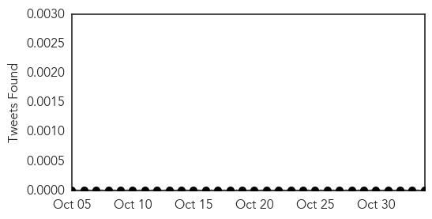
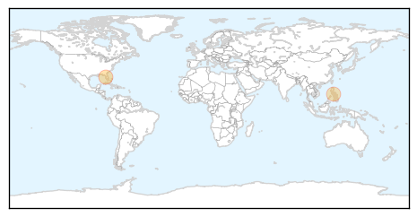

Unknown
30-Day Web Trend
0 alerts, 0 warnings

30-Day Twitter Trend
3 alerts, 0 warnings

Article Locations
Article Confidences
Top Articles:
- 0.996
- WTOC-TV: Savannah, Beaufort, SC, News, Weather & Sports
- 0.988
- Parents keen to move out of diphtheria-hit Alwar villages
- 0.983
- The Post
- 0.979
- Google Flu Trends Adopts New Model
- 0.976
- Centers for Disease Control raises travel alert for Jiangsu following H7N9 flu case
- 0.951
- Flu Season: Get Vaccinated Now to Ensure Protection
- 0.935
- Health care workers urge students to get flu shots
- 0.929
- Kansas confirms first case of flu
- 0.915
- Florida mother claims daughter paralyzed by flu shot
- 0.910
- The world windows to Thailand
- 0.870
- Did the flu shot leave a 10-year-old girl paralyzed? That’s what her mother claims
- 0.866
- Ebola crisis highlights China's philanthropic shortfall
- 0.866
- Market blast kills 10 in Nigeria's Yobe
- 0.866
- Russia says east Ukraine rebel leaders have "mandate" to negotiate with Kiev- agency
- 0.866
- Pro-Russian separatist Zakharchenko wins Ukraine rebel vote -organisers
- 0.860
- More children die in Central Darfur refugee camp - Sudan
- 0.843
- Does Your Cold Sore Mean You'll Get Alzheimer's Disease?
- 0.710
- Rising Temperatures Could Stall the Fight Against Disease
- 0.702
- This Week@WesternU, Nov. 3-7, 2014 (Western University of Health Sciences)
- 0.657
- New Test For Major Cause Of Preventable Blindness In Africa
- 0.637
- Google adds ‘real’ big data to improve Flu Trends’ accuracy
- 0.625
- Gastro epidemic strikes 1,700 in Dombivli village, polluted water blamed
- 0.623
- Laser Gum Surgery for the Treatment of Gum Disease is Now Available for Palm Beach and South Florida Residents, through Dr. Herbert Salisbury
- 0.604
- Onchocerciasis test tailored for use in the remote, low-resource settings now available
- 0.590
- Accelerating Global Progress Towards Eliminating Onchocerciasis -
- 0.567
- Call for people to take care
- 0.551
- Kootenai Health employees could be fired over flu shot
- 0.545
- Video: Kurdish unity rekindles hope for Kobane
- 0.545
- Ukraine to ‘re-examine’ peace plan with rebels
- 0.545
- Merkel warns UK against not remaining ‘committed’ to EU rules
- 0.545
- Live: Hollande addresses Canada's parliament on trade mission
- 0.545
- Battle erupts for port in Libya's Benghazi
- 0.545
- More than 100 inmates at large after Nigerian prison break
- 0.545
- France, Canada stand side by side in terror fight, says Hollande
- 0.545
- Civilian could soon lead unity government in Burkina Faso
- 0.545
- African Union gives Burkina Faso two weeks to end military rule
- 0.535
- Groups give mixed grades to Lee Memorial hospitals
- 0.533
- Aripiprazole Once-Monthly Injectable Shows Superior Effectiveness to Paliperidone Palmitate Once-Monthly Injectable on Quality of Life Scale in Patients with Schizophrenia
- 0.524
- New Malaria Vaccine Shows Promise in Kenya - World
- 0.515
- Florida mom says flu shot may have paralyzed her daughter - KLTV.com-Tyler, Longview, Jacksonville, Texas
- 0.514
- Website provides list of flu shot vaccination locations
Top Tweets:
- 0.758
- RT: Ya en cancion q busca contribuir con la erradicación del virus.Sobre él hablamos con…
- 0.546
- Las últimas palabras de Brittany Maynard antes de morir: La joven de 29 años se despidió en Facebook antes de ... http://t.co/ovBWOtU38u
- 0.520
- ayy siiii , aunque yo no estaba de bibi , yo estaba como de "zippiecup" 😂
Measles
30-Day Web Trend
0 alerts, 0 warnings

30-Day Twitter Trend
0 alerts, 0 warnings

Article Locations
Article Confidences
Top Articles:
Top Tweets:
-
No tweets found for Nov 03, 2014